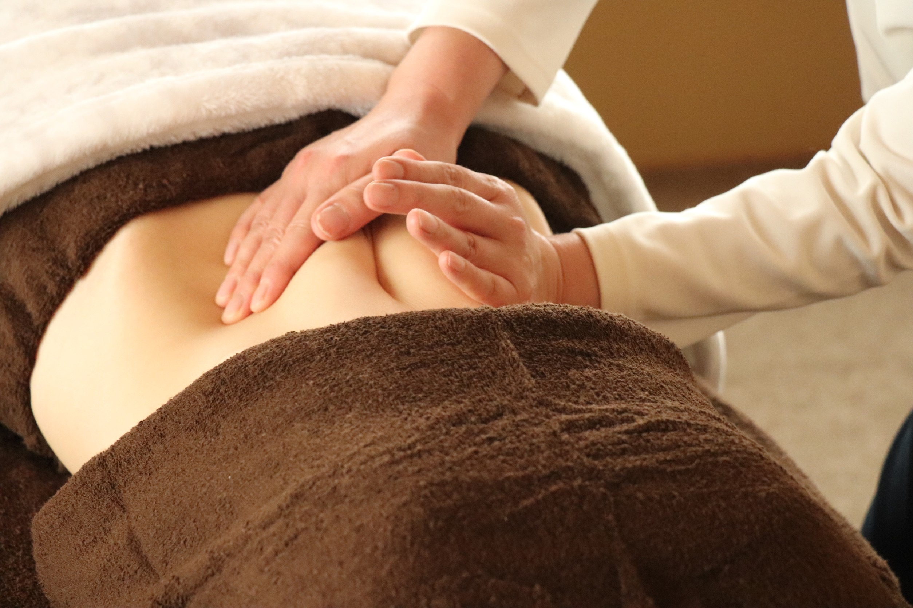
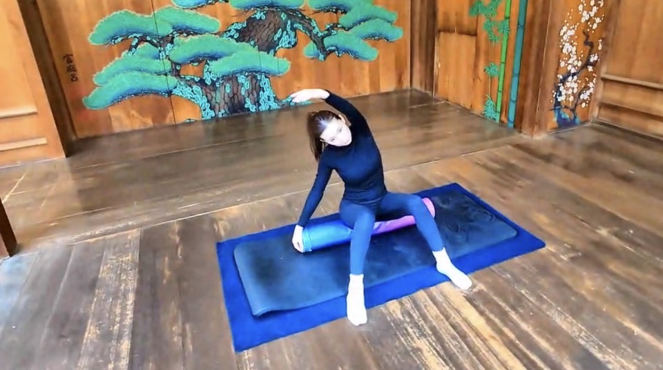
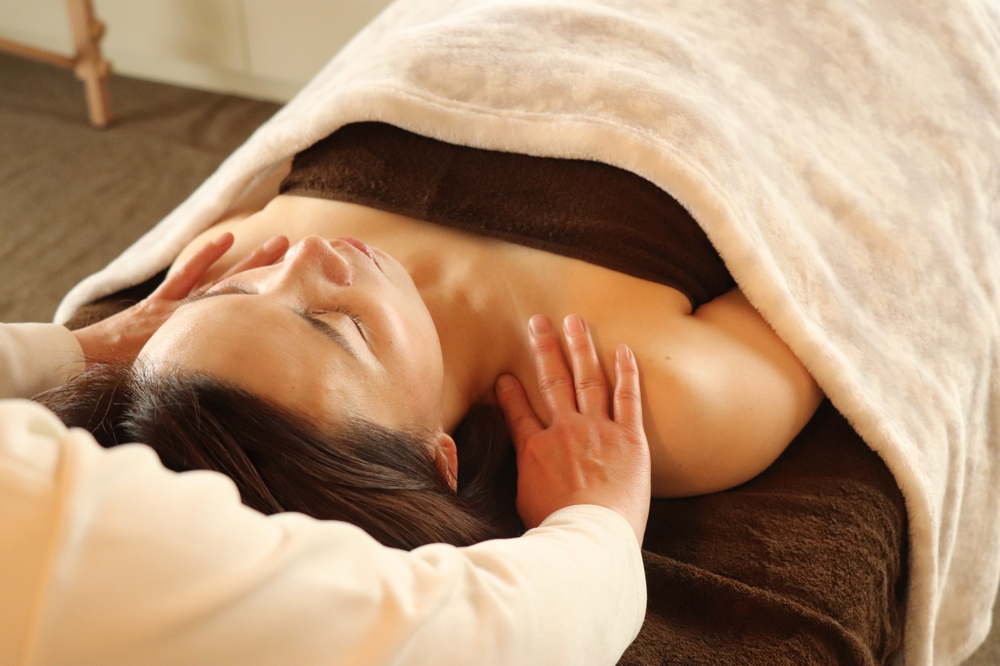
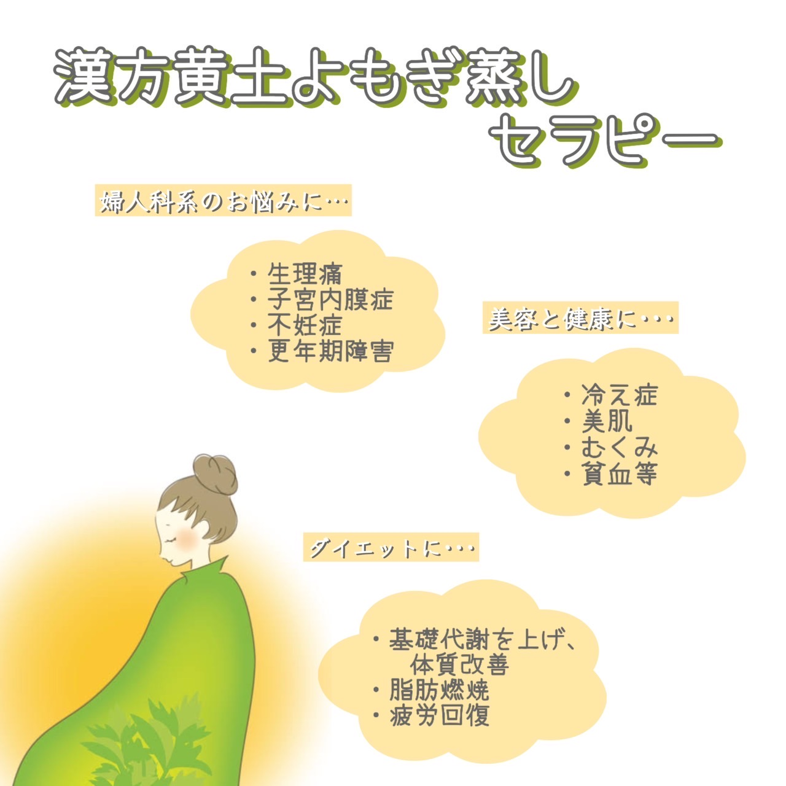

MYOJUNKA
お食事処MYOJUNKA
サロンメニュー詳細
私たちは看護師資格を持つセラピストだからこそ、身体へのアプローチ方法をより深く理解し、東洋医学と西洋医学のどちらの考え方も取り入れています。医療現場で培った知識と経験を活かし、身体にとって最も大切な「腸」を整えるメニューをご提案しております。
腸には感情が宿り、ハッピーホルモンの8割が腸から出るといわれています。
脳と相関関係にある腸を優しく揉みほぐし、心も身体もほっこり温まっていただける極上のリラクゼーションメニューです。

人は見た目が90%と言われ、その第一印象は姿勢。
姿勢改善ピラティスは、心身のバランスを整え、本来の美シルエットに近づけて良いことづくし！
「持続的な姿勢改善」、「肩こりや腰痛の予防・改善」、「見た目の印象が良くなる」、「ストレス解消」、「ダイエット効果」などが期待できます。
運動習慣がない方や運動に自信がない方でも安心してご参加いただけます。

羽のような優しいタッチでリンパ液の流れをスムーズに。
オイルなどを一切使用せずにオールハンドで真心を込めて施術する、全国でも数少ないリンパドレナージュです。

ハーブの女王とされる「よもぎ」は、特に女性特有のお悩みと基礎代謝アップが期待できるハーブ。
無農薬のよもぎを使用し、優しい香りに癒されながら、美容と健康にアプローチできるおすすめメニューです。
